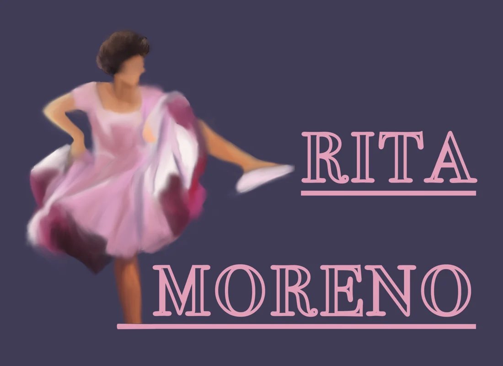

Scully co-op / shirt artwork
Scully co-op / shirt artworkCommunity & graphic design
A small corner of the internet
I make things, help people learn, and follow my curiosity.
Some of that turns into code. Some of it ends up on a T-shirt.
Scully co-op / shirt artworkCommunity & graphic design
A game-design question.
A system to explore it.
A working prototype.
As a private tutor, I help students find a way into ideas that haven't clicked yet.
Different students.
Different starting points.

Illustration & composition
And in between
They’re part of the picture, too.
Keep in touch
For opportunities, collaborations, or a good conversation.
Community & graphic design
This shirt artwork brings together origami cranes and lettering for Scully co-op, the Princeton cooperative where I served as co-president.
The design is one part of a broader practice that includes illustration and occasional freelance graphic design.
Scully co-op · shirt artwork
Back to the collection ↑Game design & systems thinking / ongoing
I wanted to explore a different kind of strategy in an autobattler: what if training a unit and shaping its choices mattered as much as choosing a team and placing it on a board?
I was interested in units that could make meaningful decisions and move freely, with skillsets shaped by the player rather than fixed classes.
I defined the problem, planned the gameplay systems, and directed AI-assisted development of a working Godot prototype. My contribution centers on game design, system decisions, testing, and iteration.
It is an ongoing Pokémon fan-game prototype, not a finished commercial release. The work I want to share is the process of turning a design question into a system I can test.
The diagram on the homepage is an explanatory sketch, not a gameplay capture or a representation of the exact implementation.
Back to the collection ↑Teaching & accessibility
I currently tutor students in mathematics, SAT preparation, and academic writing. My work involves understanding where a student is starting, adapting explanations, and planning practice around what they need.
At Princeton, I worked with faculty on an introductory Java and Python curriculum for first-generation students. During my software engineering internship at Rubrik, I evaluated front-end accessibility, implemented fixes, and documented recommendations for the team.
These are different settings for a recurring interest: helping people get access to something that can otherwise feel difficult to approach.
The internship is described from experience; internal project files are not available here.
Back to the collection ↑Illustration & composition
An illustration of Rita Moreno, combining a figure study with a typographic composition.
Drawing, graphic design, and animation are part of my work alongside technology. I like having room for the medium and the visual approach to change from one piece to another.
Rita Moreno · digital illustration
Back to the collection ↑